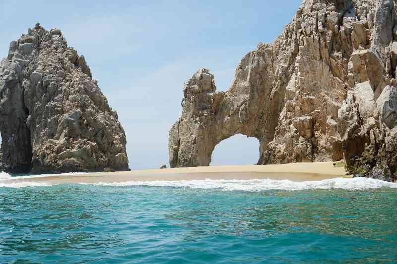

Sergio P
Mechanical Engineering
My IP address is: 130.64.64.39
I grew up in Monterrey, Mexico.

Los Cabos, located in Mexico, was the first time I got to whale watch with
my family, I saw the Arch of Cabo San Lucas, and ate a lot of seafood.
During my stay, I saw a lot of animals like turtles, seals, dolphins, and
stingrays and also enjoyed the beach.
My favorite restaurant:
El Papalote
People might not know that back home my family and I have a small pond
with Japenese goldfish and black moors which have reproduced almost
every summer for about 9 years now. They have survived 3 different
movings and have not bought any more since they started reproducing.